JangaFX 10종 원본 density → Blender 4.5.3 Cycles / RTX 3070 OptiX. Bloom 없이 태양·하늘광·6회 volume bounce. 현재 웹 장면에 적용한 결과가 아닙니다.
기존 우주 구도·서고는 유지합니다. 원거리 컷은 개별 구름의 축소 시험으로, 지구 전체 구름 분포 검증을 대신하지 않습니다. 사용자 제작 피드백 1/2 유지.
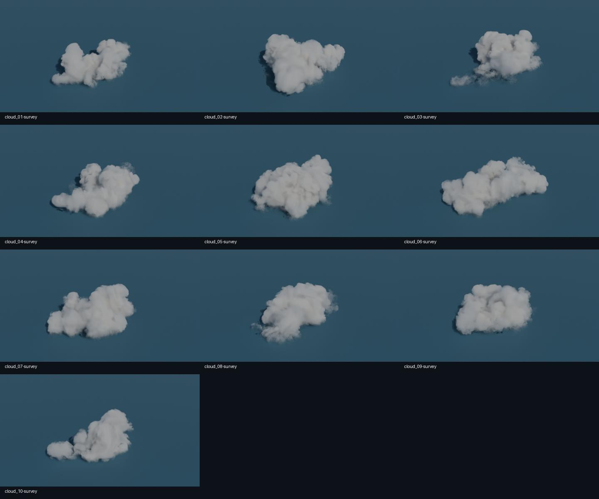
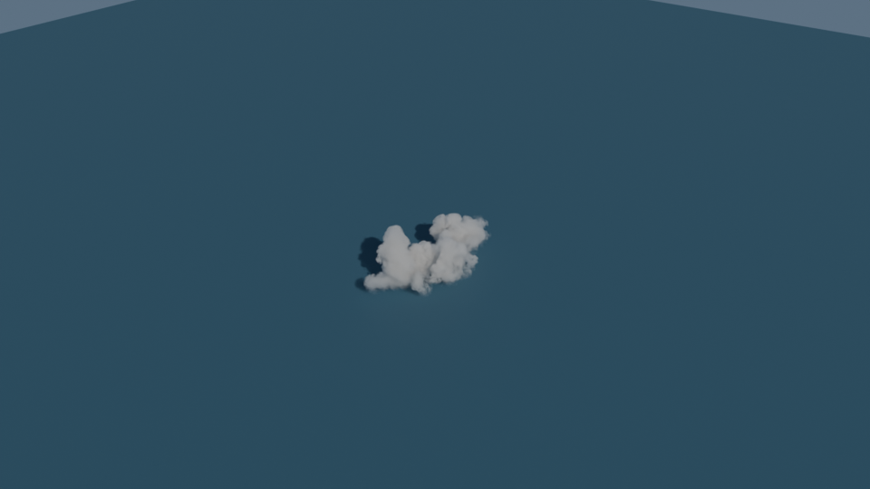
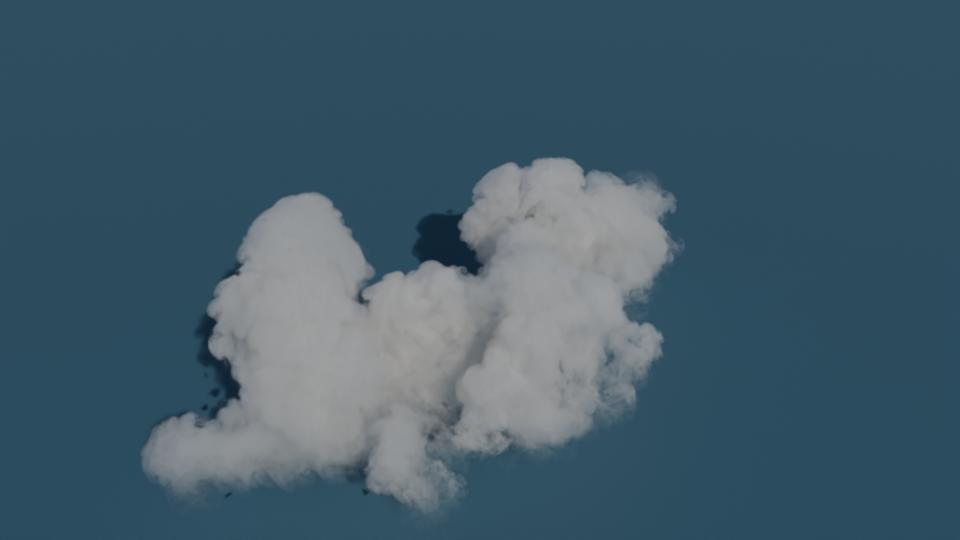
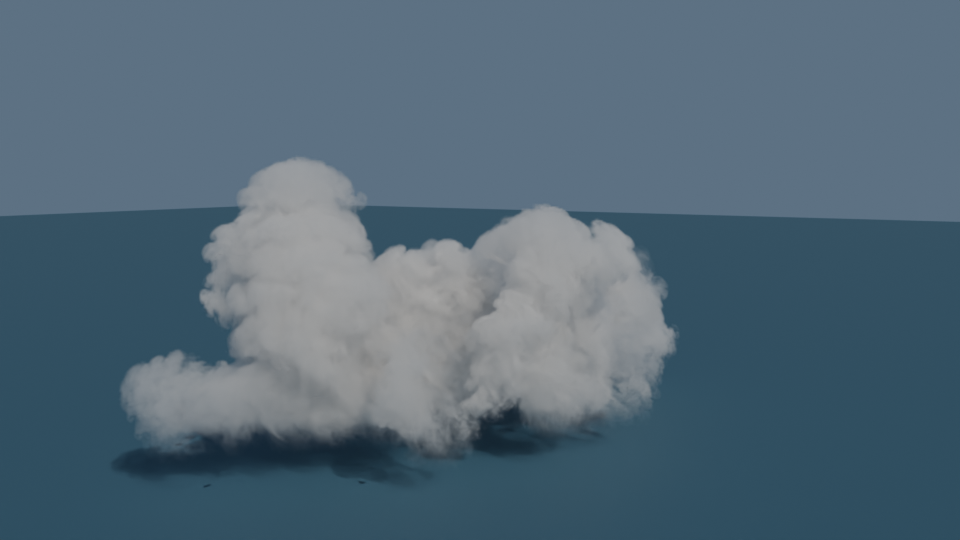
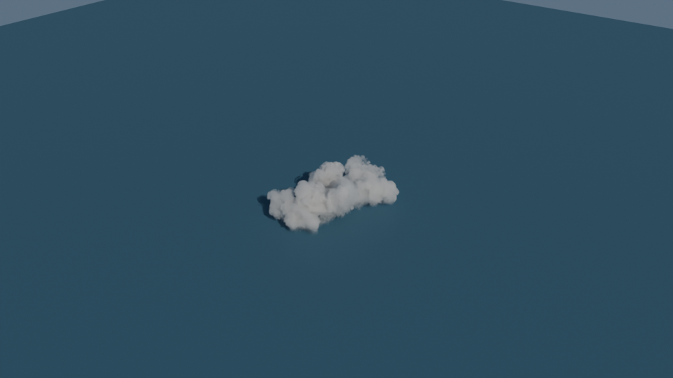
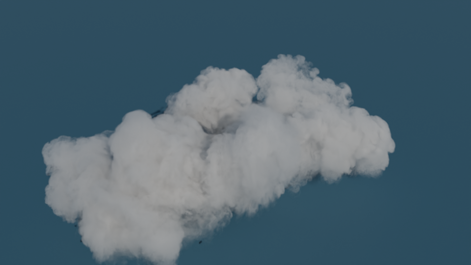
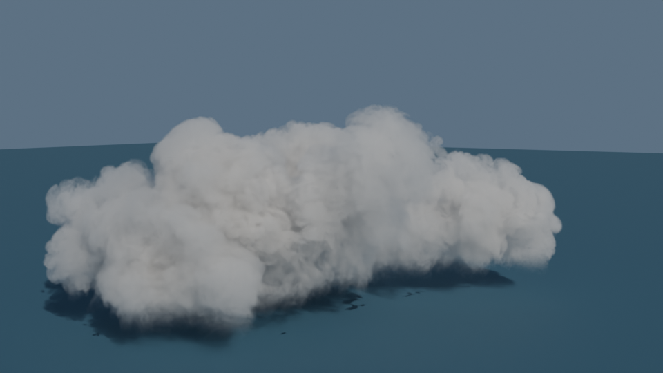
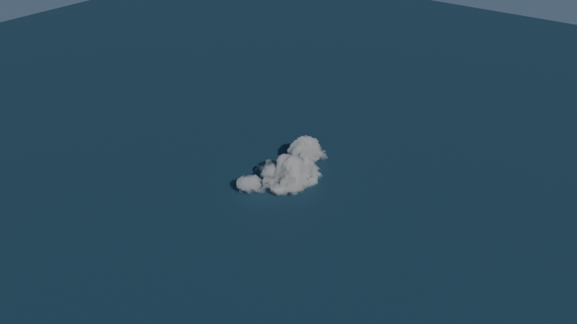
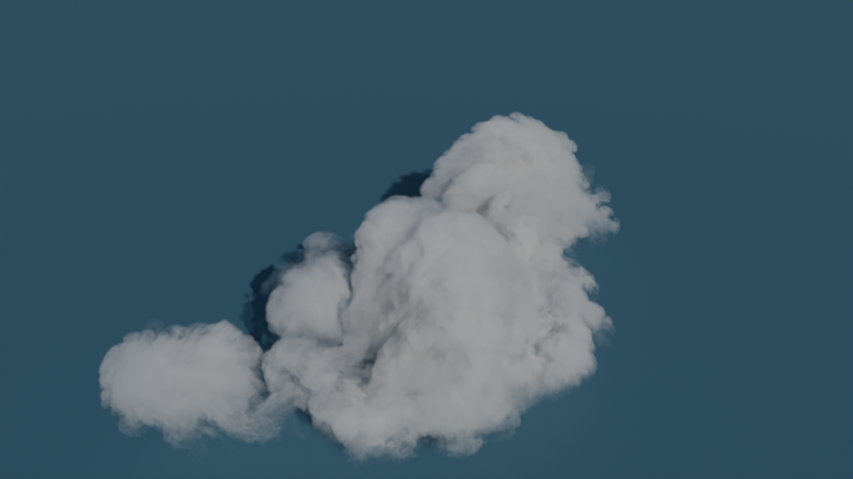
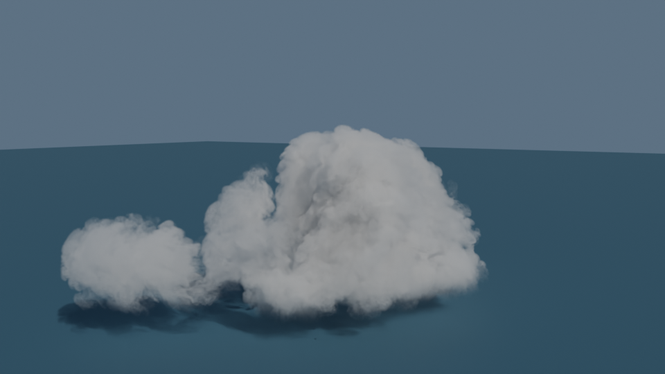
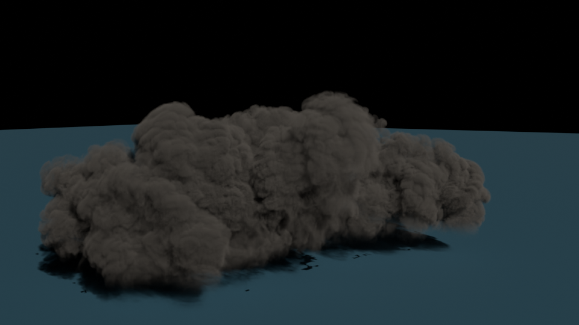
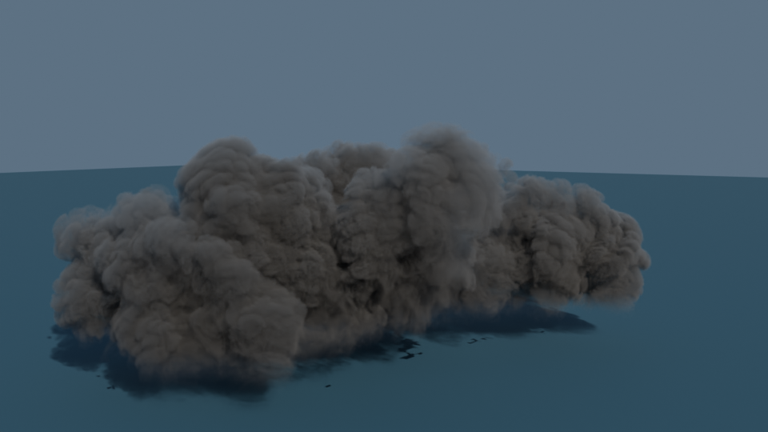
direct: sky 0 / volume bounces 0; single: sky .35 / bounces 0. 차이의 크기는 이 자산·카메라·조명에만 해당합니다.